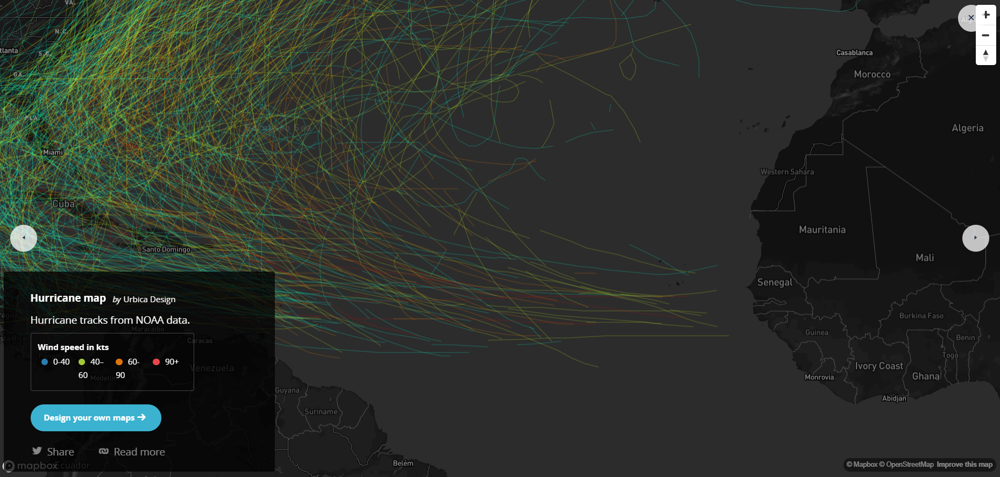
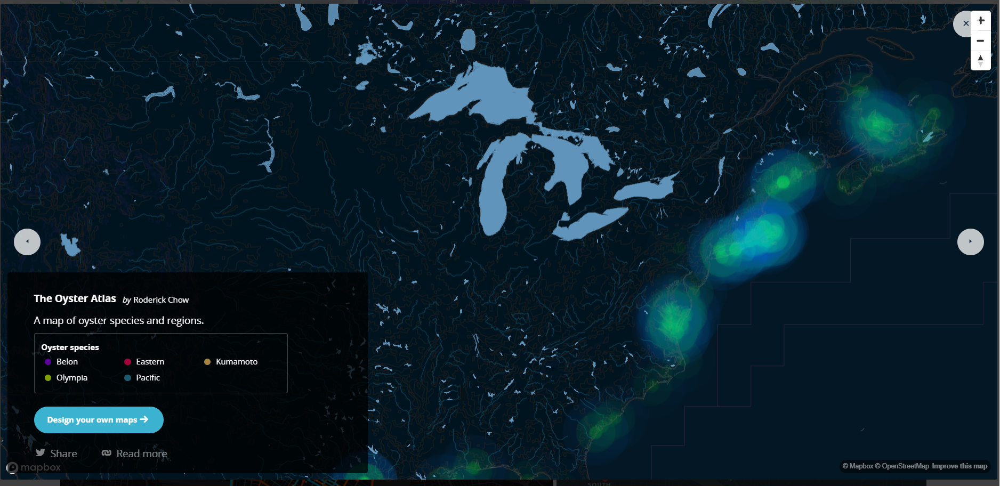
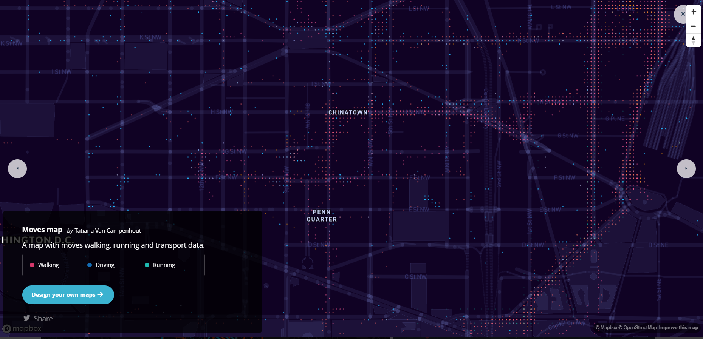

Option 2
By: Abbey Warke
Here are some examples of Mapbox that I liked:

This image is a screen shot of a hurricane map by Urbica Design that I found very interesting. This would be super useful to track hurricane patterns
and can help weather stations make predictions for future conditions. I really like the contrasting colors of this map which really allows the
hurricane paths to stand out. It also is so simple with really just a lot of lines, but it looks so complex and really overall just gets the idea
across to the viewer in a succinct and colorful way.

This image is a screenshot of oyster species and regions where they are located by Roderick Chow. I really like how this map resembles a heat map
and, similarly to the map above, the contrast of the map really allows the points of interest to stand out. I could see using a map like this for my
final project and I just might.

This image is a creenshot of "Moves Map" by Tatiana Van Campenhout. It highlights the modes of transportation such as walking, running, and
driving. This would be very useful for regional planners to see where would be good areas for parks, new bike paths and routes, etc.
I really like how they were able to fit so much data on the map and yet still make it look clean and neat.
If I were to use this tool to make a map in the future, I would try and make something similar to the Oyster map. I feel like this map
describes the habitat area very well which is what I am looking to do in my final project. I would like to use a black/night looking background
and a bright color which would make the areas stand out. I also could see using this tool in a regional planning job to highlight areas of interest as well.
Symbols and lines would work better for that type of project with a street basemap.